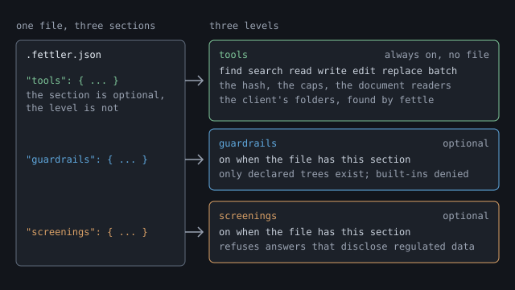

Shoddy · Fettler
A fettler kept a mill’s machines in working order. These two programs keep an AI assistant’s work in order: fettle for the files and pick for the SQL Server. Fewer calls, less context, and nothing left half done.
fettle: the files
Find, search, read and edit files, with answers a script or an assistant can hand straight back. Start it in a folder and it works. Guardrails and screenings are optional levels on top.
Start with the files →pick: the SQL Server
SELECT and DESCRIBE, one checked statement at a time. There is no default database, no USE, and no system catalog. A parser refuses anything it cannot check. The same two optional levels sit on top.
Ask an assistant to rename a type across a project, then watch what it runs. It reaches for grep, sed and find, or for its own copies of them, one file at a time through a shell. Those tools are fifty years old, and they were written for a person at a terminal. They answer in text meant for eyes, they know nothing about the call that comes next, and each one costs the assistant a round trip and a block of its context, the text it can hold at one time.
Fettler gives the assistant the same jobs as verbs built for it. Each answer is shaped to be the next call’s argument, several things happen in one call, and a change lands whole or not at all.
| The job | The built-in tool, or the shell | What went wrong | fettle |
|---|---|---|---|
| Find files | Glob, or find | Results swamped by bin and node_modules. A pattern that matches on one platform and not another. A list with no size or time, so a second call asks for them. | find: a pattern that means the same on every platform, with each file’s size and time. Generated folders are skipped. It stops at 1,000 files and says so. |
| Search text | Grep, or grep | A pattern that runs away. A hit printed as text to be parsed again. A PDF or a spreadsheet skipped in silence, so the search reports nothing and looks complete. A brace pattern that matched nothing and said nothing. | search: several patterns in one call, each under a time limit. Each hit is tree:path:line:column. It looks inside PDF, Word and Excel files, and a pattern that matched no file says so. |
| Read a file | Read, or cat | A whole file into context for three lines of it. A minified file as one enormous line. An encoding guessed wrong and written back wrong. An answer so large the client rejects it, which costs a turn and returns nothing. | read: several paths in one call, a range or a tail, numbered lines, a hash of the content, and a size cap it states. The encoding is read from the file, never guessed. |
| Read a notebook | NotebookEdit | A megabyte of image data pasted into the conversation, for a picture nobody can see. | read returns the cells and measures an image output instead of pasting it. A notebook is JSON underneath, so edit changes it like any text file. |
| Create a file | Write, or echo > | A file overwritten without asking. A secret written into a checked-in file. A PowerShell here-string putting CRLF into an LF file. | write, new, mkdir: replacing a file needs saying so. Refused if the text would add a password or key, or if the file says what Fettler or the assistant may do. |
| Change a file | Edit, or sed | An anchor that no longer matches exactly, so the edit is retried until it lands, sometimes in the wrong place. Quotes, backslashes and newlines escaped onto a command line. sed -i rewriting every line ending for a one-line change. A byte-order mark spliced into the middle of a file. | edit: a batch of edits, anchored on text or on a line number, checked whole before a byte is written. Refused if the file changed since you read it, and a failed edit is named. Text can come from a file, so nothing is escaped. Line endings and encoding stay as they were. |
| Change many files | a sed -i loop | A loop that fails at file 15 and leaves 14 changed. No way to see the change before it is made. | replace: one substitution across a pattern of files, with a dry run first. All files change, or none do. |
| Move, copy, delete | mv, cp, rm | rm -r taking a folder nobody meant. A move that replaces its target without saying so. A path that climbs out of the project. | move, copy, delete: a path that leaves the tree is refused. Replacing a target needs saying so. A recursive delete that would reach a protected folder is refused whole. |
| Unpack an archive | tar, unzip | A member named ../../etc/passwd landing outside the folder. A half-unpacked archive. A link member that escapes after every path check passed. | extract: every member is checked first, and the archive is refused whole if any would land outside. Links are refused. The execute bit is carried. |
| Several steps | a shell pipeline | Quoting that differs in every shell. A pipeline that fails halfway and leaves the state unknown. PowerShell 5.1 turning a native program’s error output into an error of its own, with $? false on exit 0. | batch: one call, in order, stopping at the first step that fails and naming it. In JSON mode the whole answer is on standard output, failures included. |
| Run the build | Bash, PowerShell, Monitor | A command line composed from arguments, so a quote or a semicolon in a value changes what runs. A command that works on one machine and fails on the next. | run: a task the project declares, by name, with no arguments and a timeout. Nothing is composed. There is no shell. |
| Read back a long output | BashOutput, TaskOutput | Bytes that reach the model without passing the tree boundary, the credential check or the screen. | The client saves a long answer in its tool-results folder. read opens it there, read-only, through the same caps and checks as any other file. |
The second column is the eleven built-in tools that setup denies: six file tools and two output readers at the tools level, and three shells once guardrails are on. Each has a verb here that answers in a form the next call can use. And there is no current directory. Every path names its tree, so a call cannot land in the wrong folder.
Renaming a C# type in this repository touches 200 places across 23 files. Here it is done with the built-in tools, and done with Fettler.
| Built-in file tools | Fettler | |
|---|---|---|
| Calls | one search, then a read and an edit for each file: 47 | search, replace --dry-run, replace: 3 |
| Context spent | 23 whole files | the matching lines |
| If it fails at file 15 | 14 files renamed and 9 not, and nothing says which half changed | nothing is written until all 23 files are checked |
| Batching and pipelining | read takes several paths. search takes several patterns. batch takes a whole sequence. Every answer is the next call’s argument: search gives the place, read gives a hash, and edit takes the hash back. |
| Paging and large answers | A read stops at 2,000 lines and 40,000 characters and says how much it left out. A range reads the middle of a file, and tail reads the end of a log. A declared task’s output keeps its last 40,000 characters and says how much it left out. A notebook’s image output is measured, not pasted. One file cannot fill the assistant’s context by accident. |
| Documents, not only source | Notebooks come back as cells. Excel comes back as rows, with the formulas, and with dates as dates. Word comes back as paragraphs under their headings, PDF as text per page, images as facts, and archive members without unpacking. A search looks inside all of them and cites the page. |
| Reliability | A batch is all or nothing. A file keeps its own encoding, line endings and execute bit. Results are ordered before any limit, so a cut answer is the same cut twice. A refusal says why in its first sentence. In JSON mode the whole answer is on standard output, failures included. |
| Writes it refuses | A write that would add a password or an access key to a file. A write to any file that says what Fettler or the assistant may do. |
| The client’s own folders | This session’s scratch folder, the tool-results and memory folders, and the working folder of a companion server such as sparky, all opened with nothing declared. |
| One file, two front ends | One self-contained file per operating system, with no .NET to install. A command line for scripts and an MCP server for assistants, and the two give the same answer byte for byte. |
On Windows, Fettler needs no WSL, no Git Bash, no Python and no .NET. It is one file that runs natively on Windows, macOS and Linux, and its verbs are the same on each. The command an assistant runs from PowerShell is the command it runs from bash. Nothing else is installed to make the file tools work.
Both programs do three kinds of work, called levels. The tools are always on. The other two turn on when the project’s configuration file has a section of that name, so a project that only wants the tools writes nothing.

.fettler.json, has one section per level, and a section turns its level on. The tools section is optional and only adjusts settings. The tools level is on with no file at all.| Level | On when | What it gives you |
|---|---|---|
| tools | always, with no file | everything above. For data: SELECT and DESCRIBE through the query gate |
| guardrails | the file has a guardrails section | the folders or databases you name, what may be done in each, and nothing else existing |
| screenings | the file has a screenings section | a screen that refuses any answer that would disclose regulated data |
With guardrails on, the world is a declared list. A tree is a folder you name, with a list of what may be done in it. Whatever you do not name does not exist, and a path outside the trees is refused in the same words as a file that was never there. The rules people arrive with are all sayable:
| The rule you want | With guardrails on |
|---|---|
| Look, don’t touch. | A tree can be read-only. It is the default for every tree but the one that holds the file. |
| Work here, not there. | Two trees. One grants writes, and the other keeps the read-only default. |
| May add and revise, never destroy. | Grant create, update and rename, and withhold delete. Most tooling cannot say this at all. |
| Not for you. | A folder granted nothing does not exist. It never appears in a search, and guessing its path answers the same as a path that was never there. |
| Run the build, and nothing else. | Declare the task by name and grant execute in one tree. There is no shell, so there is nothing else to run. |
| All of that, but only under one folder. | A scope: the same words, stated inside a tree. |
A setup command then turns off the assistant’s built-in file tools and shell, so Fettler is the only route to a file. Picker does the same for databases, tables and columns, and a hidden column is missing from SELECT * before the server sees the query. Guardrails for the files and guardrails for the data draw the whole arrangement, line by line.
The screen refuses any answer that would disclose regulated data, and it is off by default. You name the tree or the database that holds the records, and every answer leaving it is checked first. One match refuses the whole answer, with exit code 13. It never hands back a redacted copy, because a redacted copy looks safe and is not.
| Category | Catches | Needs |
|---|---|---|
identifiers | social security numbers, valid card numbers, phone numbers, email addresses, labelled record numbers and labelled dates of birth | nothing installed. Six patterns run inside the program. |
clinical | names, dates and conditions in clinical text | a model you install, run by burler, a second program |
legal | contract and consumer-report text | a model |
scientific | research and scientific data | a model |
Until a model is installed, the last three categories screen nothing, and the tools say so in plain words. Screenings for the files and screenings for the rows cover the models, and one set of models on disk serves both programs.
| You want | fettle | pick |
|---|---|---|
| What it is, and why | Overview | Overview |
| Working in five minutes | Quick start | Quick start |
| The operations, with no file | Tools | Tools |
| Declaring the boundary, drawn | Guardrails | Guardrails |
| Refusing regulated data, and the models | Screenings | Screenings |
| The per-machine setup, in full | Install | Install |
| Every verb, refusal and exit code | Reference | Reference |
burler, the model host the screen’s second tier uses, is a separate download. Only people who switch that tier on need it, and it serves both programs.